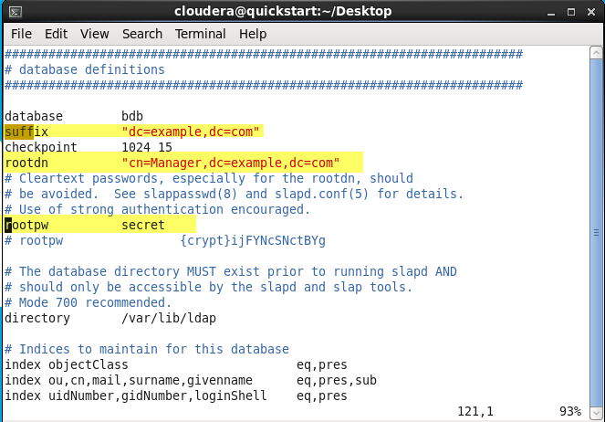
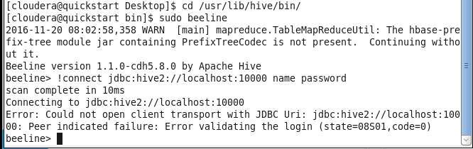

Table of Contents
1 安装OpenLDAP
- 使用yum安装OpenLdap
sudo yum install -y openldap openldap-servers openldap-clients
- 复制文件
sudo cp /usr/share/openldap-servers/slapd.conf.obsolete /etc/openldap/slapd.conf sudo cp /usr/share/openldap-servers/DB_CONFIG.example /var/lib/ldap/DB_CONFIG sudo mv /etc/openldap/slapd.d{,.bak}
- 修改配置文件
sudo vim /etc/openldap/slapd.conf
- 修改前

- 修改后

suffix: 是根域
rootdn: 是管理员所在位置
rootpw: 是管理员密码，可以是明文（本示例为：secret），也可以是加密的（如 rootpw {SSHA}NXV9Fl28qCHMmA6P sjhVX0uejTKE6OYr）
- 分配目录权限
sudo chown ldap.ldap /etc/openldap/* sudo chown ldap.ldap /var/lib/ldap/*
- 启动sladp,启动后的389端口就是默认端口。
sudo service slapd start

- 新建文件example.ldif
dn:dc=example,dc=com objectclass:dcObject objectclass:organization o:Example, Inc. dc:example dn:cn=Manager,dc=example,dc=com objectclass:organizationalRole cn:Manager
- 导入example.ldif
ldapadd -x -W -D "cn=Manager,dc=example,dc=com" -f example.ldif
- 输入刚设置的 rootpw 的密码

- 查询已经导入的数据
ldapsearch -x -b "dc=example,dc=com"

2 Sentry整合OpenLDAP
照着cloudera官方文档来http://www.cloudera.com/documentation/enterprise/5-2-x/topics/cdh_sg_hiveserver2_security.html

- 配置HiveServer2的参数

- 重新启动hive，使用beeline登录，使用一个错误的账号和密码（因为还木有正确的账号）

- 可以看见登录被拒绝了，查看日志
tail -f /var/log/hive/hadoop-cmf-hive-HIVESERVER2-quickstart.cloudera.log.out
- 问题来了，什么才是正确的用户名和密码呢？
官方cloudera的文档是这样写的

LDAPUserid 和 LDAPPassword 这个是个什么鬼？对应OpenLdap里面的什么？ 其实这个可以在Hive的源码中看到一个hook，是关于和ldap集成的。
- 直接来结果吧！按照前面的方法再导入一条数据
dn: uid=testuid,cn=Manager,dc=example,dc=com objectClass: organizationalRole objectClass: posixAccount uid: testuid cn: testcn gidNumber: 11 uidNumber: 123 homeDirectory: wer
其中的 uid 就是用户名
- 为刚创建的数据添加密码
ldappasswd -x -D "cn=Manager,dc=example,dc=com" -w secret "uid=testuid,cn=Manager,dc=example,dc=com" -S
- 已经可以登录了